Update #2
Update #1
Update #Template
04/Oct/2026
Update #2
11/Oct/2026
Since last week I didn’t have enough time to post an update on my work, I had to postpone that for this week and also make sure to save enough time for this week’s report. While making the dev log updates I made sure to use tools like PNG-to-8-bit Converter (OptimizePNG), TinyPNG, and Paint to compress and size down my images as much as possible, making my whole website less than 200kb – smaller than a screenshot of it.
This is necessary because this whole website is a single HTML file giving the illusion of multiple pages through sections. Therefore, all images get loaded all at once, when you load the whole website, so every future size increase of the website will affect the experience of loading it exponentially. However, this also has the benefit of feeling lightning fast once loaded while still being fairly well maintainable.
Update #1
04/Oct/2026
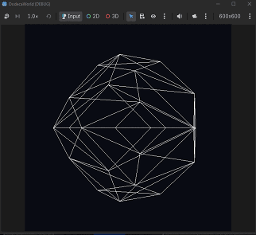
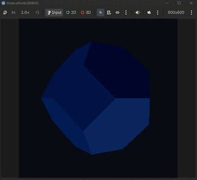
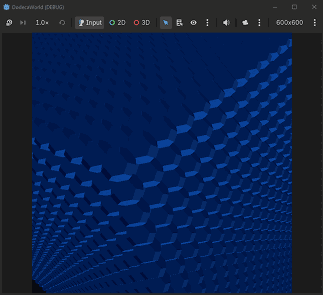
At the end of April, for my dissertation, I wanted to make a Minecraft/Vintage Story type of game but with truncated octahedrons instead of cubes (since they are the next space-filling polyhedron in terms of vertex complexity after the cube; I also thought a truncated octahedron and dodecahedron were different namings for the same thing due to a confusing website, so my Godot project is named "Dodeca World" when it actually has truncated octahedrons in it).
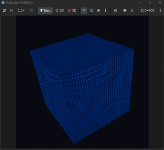
During summer I started working on this idea and managed to make a function that would draw BCH-spaced (Honeycomb) truncated octahedrons in 32x32x32 chunks in Godot. (I wanted to learn a new game engine while doing my dissertation as well)
After doing that, which took me about 1 month of intermittent work between vacations, I realized that this project would be too hard and complex to finish during a year filled with other assignments as well.
Not to mention unrewarding since at the end of the day I’d have to design a fun game around my generated truncated octahedron map which would’ve been a challenge in itself and the project would’ve probably end up incomplete which is not what a dissertation project should be like.
-------------------------------------------------------------------------------------------------------------------------------------
Therefore, I thought that the best idea would be to make an easy to complete game, that I could finish until the end of the year and spend the next year just playtesting and perfecting. An easy to complete game would have to be a game that I’d enjoy making, with low complexity and easy to jump into working on it without requiring a big context to add/change something.
So, I came up with the idea of making an idle game, build up a storyline around it, and then turn it into a 2D/3D game by just linking its already existing functions and classes to other inputs and/or outputs. (while still having the base idle game as a backup in case I don’t manage to finish this transition)
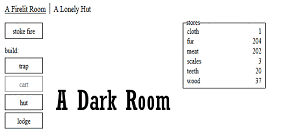
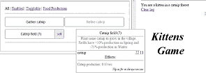
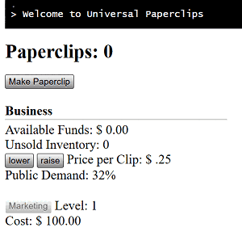
Since I haven’t played many idle games before, so I didn’t know what works and what doesn’t, and I was also quite unsure what I wanted my game to be exactly, I decided to play a few games in the genre to form a conclusion. I started with A Dark Room, then went on to Universal Paperclips, Kittens Game, Cookie Clicker, and Learn to Fly 3.
During this time I realized I prefer the survival aspect and sense of progression of these games a lot more than just mindless “number go up over time”. And I also really liked the combat system in A Dark Room. So based on those observations, I concluded that the best course of action would be to make a role-playing survival, maybe survival-horror, idle game.
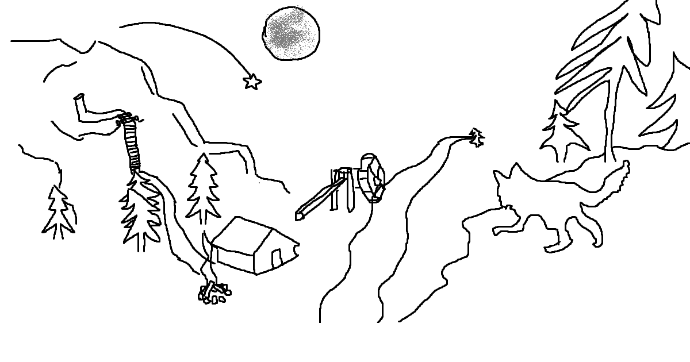
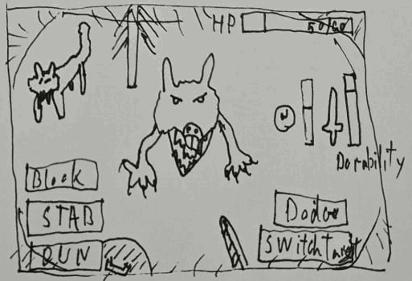
-------------------------------------------------------------------------------------------------------------------------------------
With these types of games I believe it would be best if I were to write down the entities I want my game to have in an Excell spreadsheet first, come up with a story line, perhaps add/change items based on the story requirements, then code the classes and functions for those entities. This way I think I could better visualise the bigger picture and plan ahead instead of starting to code and just add items, entities and mechanics as I go.
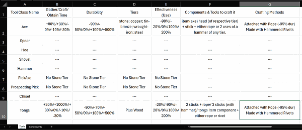
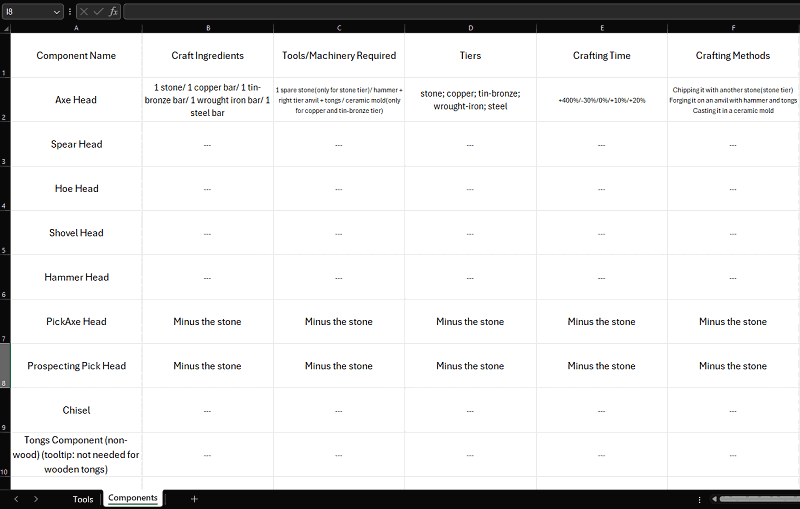
So far during this update I’ve made 2 Excell spreadsheets detailing a few tools and components my game will have, inspired mainly from Vintage Story, and I also made a very basic blog website with just a link to this update page, but the update page wasn’t started yet. Progress as of 04/October. Next up I plan(ned) to finish my first update page (11/Oct), add either a page or 2 to my Excell file or 20 or so entries with items, and play some story-driven survival games to get inspired for the story of this game.